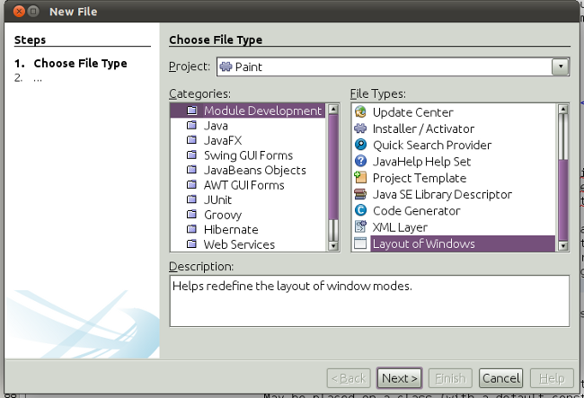
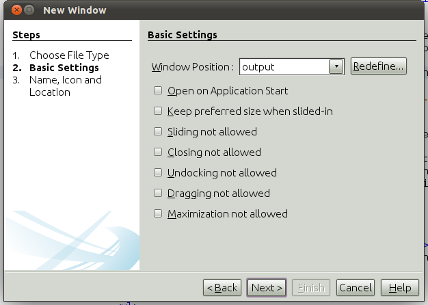
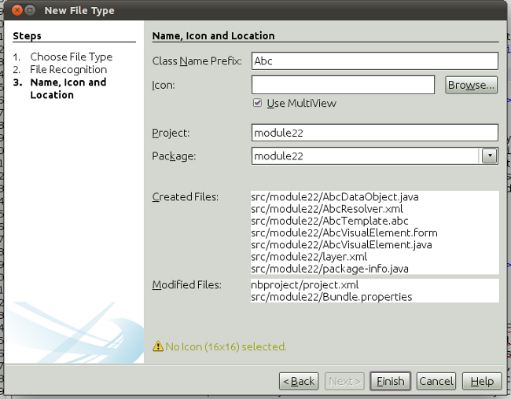
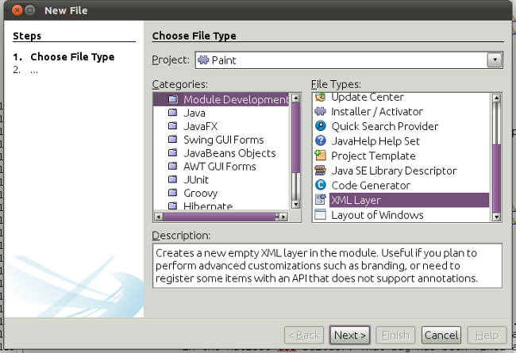

An overview of changes relating to NetBeans Platform 7.1, which is the Swing framework that underpins applications such as NetBeans IDE.
Note: Click here for the previous release of this document.
The most important new features & enhancements provided in the 7.1 release are as follows:
Roles. Multiple window layouts are supported. The TopComponent registration annotation has been enhanced to include a new "roles" attribute, so that each TopComponent can optionally be assigned to one or more roles. It is possible to programmatically switch between different roles and then the window layout is automatically updated to support the newly selected role.
Javadoc:
Window Layout Designer. In the New File dialog, there is now a Window Layout designer:

It starts up a new instance of your application, then shows all the modes defined in your application, and lets you reposition and rename existing modes while also letting you create new ones. When you close the designer, you can save changed and new mode definition files into your module, and they will automatically be registered in the module's layer file.
The new "Redefine" button in the Window wizard lets you do the same:

File Type Wizard With MultiView Component. In the New File Type dialog, there is a new "Use MultiView" checkbox. When the checkbox is checked, the wizard generates a JPanel that implements MultiViewElement and registers it in the DataObject, using the new annotation above:

Feed feed = FileUtil.getConfigObject("RssFeeds/sample.instance", Feed.class);
Action myAction = FileUtil.getConfigObject("Actions/MyFolder/MyAction.instance", Action.class);
Note: In NetBeans Platform 7.2, the above will be superseded by Actions.forID("MyFolder", "MyAction").
New Layer Wizard. The New Module Project wizard does not let you define a layer.xml file for your module anymore. Instead, there is a new template in the New File dialog for creating a layer file:

The template creates an empty layer file and registers it in the manifest.
Template Registration Annotation. Registers a template in the filesystem. May be placed on a class (with a default constructor) or static method (with no arguments) to register an WizardDescriptor.InstantiatingIterator for a custom template or on a package to register a plain-file template with no custom behavior.
Javadoc:
SaveCookie. The SaveCookie interface is replaced by the Savable interface, with a default implementation provided by AbstractSavable. However, SaveCookie can still be used exactly as before.
Javadoc:
For a list of all the changes, see http://bits.netbeans.org/7.1/javadoc/apichanges.html